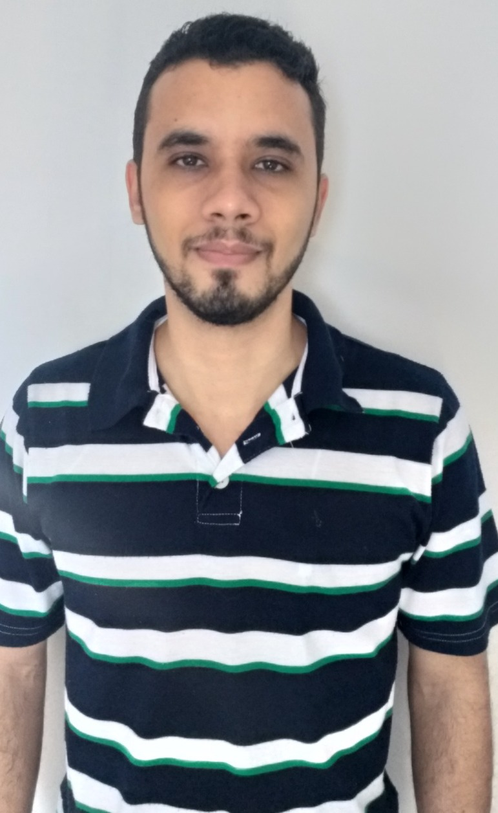

Sendo esta a primeira edição da Revista de Matemática Hipátia, faremos, nesta seção Simpósio, uma breve resenha de eventos organizados por membros da comunidade do Departamento de Matemática do Instituto de Matemática e Estatística da Universidade Federal da Bahia. Alguns deles já aconteceram ao longo do ano 2022 e outros irão ser realizados neste 2023.
Vários desses eventos têm caráter permanente, tais como o Seminário Café Cultural e o Programa de Verão da Pós-graduação em Matemática. Outros são eventuais, realizados por diversos membros da nossa comunidade.
O Projeto Pedagógico do Curso de Matemática da Universidade Federal da Bahia estabelece que os estudantes de graduação, tanto da Licenciatura como do Bacharelado, devem ter formação complementar em atividades de natureza acadêmica, cultural, artística, científica ou tecnológica, que possibilitem a complementação da formação humana e profissional, isto é tanto no âmbito do conhecimento em Matemática e em diferentes áreas do saber, como no âmbito de sua preparação humanística e cultural.
Nesta perspectiva, a fim de propiciar a participação em atividades que ampliem, enriqueçam e consolidem sua formação acadêmica, foi criado o Seminário Café Cultural, um ciclo de palestras de extrema relevância para a formação dos nossos alunos.
O Café Cultural contribui na formação geral complementar dos alunos da graduação em Matemática das instituições de ensino superior na cidade de Salvador e região metropolitana envolvendo outros campos de conhecimentos necessários além da matemática. As palestras do Café Cultural visam oferecer aos participantes um ambiente propício para cobrir estas necessidades. Além disso, pretende-se atender os princípios de flexibilidade e de atualização, e potencializar os conhecimentos acadêmicos, estimulando os estudantes a participarem de projetos de iniciação científica, de ensino e de extensão.
O Café Cultural é um ciclo de palestras distribuídas no decorrer do ano. Tem acontecido em edições anteriores, destacando o período de 2016-2018 sob a coordenação da professora Simone Moraes, e desde abril de 2019 sob a coordenação dos professores Cristina Lizana e Roberto Sant’Anna. O seminário acontece pelo menos uma vez por mês, geralmente nas quintas-feiras, no Auditório do Instituto de Matemática, das 16h40 às 18h30.

No período de pandemia, o seminário foi realizado em formato online, permitindo a participação de palestrantes e público de diversos lugares. Após o retorno às atividades presenciais, o Café Cultural manteve um formato híbrido, sendo realizadas atividades presenciais com transmissão ao vivo pelo canal de YouTube do Departamento de Matemática, evidenciando o caráter extensionista deste seminário. Cada palestra confere ao participante um certificado com uma carga horária de três horas em Atividades Complementares.

No ano de 2022, contamos com as mais diversas atividades online e/ou presenciais. Dentre os palestrantes podemos citar a participação dos professores Vinícius Mello (Fig. 1), Carlos Bahiano (Fig. 5), Vítor Araújo (Fig. 4), do DMAT - UFBA, e do professor Henrique Antunes do Departamento de Filosofia da UFBA. Ademais, contamos com duas mesas redondas para compartilhar experiências no intuito de incentivar meninas e mulheres a estudarem matemática: “Mulheres na Matemática: um olhar para o passado e o futuro” (Fig. 2), com as professoras Márcia Barbosa de Menezes (DMAT-UFBA) e Maria Cristina Elyote Marques Santos (Projeto “Elas nas Exatas” – UNEB), e “Torneio Meninas na Matemática” (Fig. 3), com a professora Ana Paula Chaves (UFG) e as medalhistas de olimpíadas de Matemática Larissa Lemos Afonso e Cecília Mileski de Paula. Além disso, tivemos uma atividade especial com a psicológa Luana Machado para falar sobre a ansiedade, explicando a sua funcionalidade e desconstruindo tabus que atrapalham a forma como lidamos com essa emoção, ensinando práticas de manejo dessa emoção da terapia cognitiva comportamental, de forma breve e prática.
Para mais informações sobre o Café Cultural podem visitar o site http://cafeculturaldmat.ime.ufba.br/ e assistir os eventos anteriores no canal de YouTube do DMAT https://www.youtube.com/@depmatufba.
O Seminário ICmat nasce por iniciativa do programa de Pós-Graduação em Matemática da UFBA. É um seminário público e aberto a todos os estudantes da UFBA, assim como de outras instituições, que estejam interessados em temas abordados nos projetos de iniciação científica, propostos pelos professores do Instituto de Matemática e Estatística (IME) da UFBA.
A Iniciação Científica (IC) é uma excelente oportunidade para todos os alunos da graduação, mesmo que não pretendam ser pesquisadores. A iniciação permite despertar a vocação científica e incentivar novos talentos, assim como desenvolver habilidades que podem ser úteis em qualquer atividade profissional futura. Participar em projetos de iniciação científica estimula o desenvolvimento do pensamento científico e da criatividade, e será de muita ajuda para quem deseja continuar na vida acadêmica e realizar estudos de pós-graduação (mestrado e/ou doutorado).
Quem tiver interesse em fazer um projeto de IC, deve entrar em contato com algum professor da sua universidade, não precisa ser feita na mesma unidade onde estuda. É aconselhável que procurem professores que fazem parte dos programas de pós-graduação. Além de ser uma oportunidade para aprender assuntos novos, existe a possibilidade de conseguir bolsas de IC.
O Seminário ICmat, organizado no ano de 2022 pelos professores Diego Catalano Ferraioli, Dirk Erhard e Thiago Bomfim, tem o objetivo de oferecer um espaço para interagir entre aqueles que participam de projetos de IC relacionados a Matemática e os demais estudantes da graduação, divulgando os trabalhos realizados por cada estudante, estimulando uma troca de experiências e promovendo um maior amadurecimento científico dos participantes.
No período 2022.1 foram realizadas 10 palestras por discentes envolvidos em projetos de IC vinculados a projetos de professores do DMAT. Para mais detalhes, podem visitar o site http://dgmp.mat.ufba.br/ICmat/seminarioICmat.html e ver os resumos de projetos de outros discentes que podem chamar a sua atenção. Se você tiver interesse, pode visitar o site da Pós-graduação em Matemática e ver a lista dos docentes e áreas de pesquisa https://pgmat.ufba.br. Para mais informação sobre o PIBIC acesse o site https://pibic.ufba.br.
O Dinâmica Arretada é um seminário interinstitucional de Sistemas Dinâmicos, Teoria Ergódica e áreas afins de universidades do Nordeste, que visa contribuir na integração e consolidação da comunidade dinamicista da região Nordeste do Brasil.
O comitê organizador do Dinâmica Arretada é conformado pelos professores Carlos Bocker (UFPB), Cristina Lizana (UFBA), Davi Lima (UFAL), Ítalo Dowell (UFPI), Maurício Poletti (UFC), Ricardo Bortolotti (UFPE), Vanessa Ramos (UFMA), Vilton Pinheiro (UFBA), Wagner Ranter (UFAL), e Yuri Lima (UFC).
O seminário surgiu como uma iniciativa para integrar os pesquisadores em Sistemas Dinâmicos da região Nordeste, o primeiro encontro tendo ocorrido no dia 30 de setembro de 2020. O evento é realizado na última quarta-feira de cada mês em formato online, o que facilita a participação de pesquisadores e alunos de diversas instituições e lugares, com uma participação média por evento de 20–30 pessoas. Em pouco mais de dois anos que tem o Dinâmica Arretada, tem sido realizados mais de 19 palestras com diversos pesquisadores, tanto jovens como mais experientes, e dando especial atenção à regionalidade e subrepresentatividade de gênero, contando também com convidados internacionais renomados.
Para mais detalhes sobre os eventos passados podem visitar o site https://sites.google.com/view/dinamicaarretada e o canal de YouTube https://www.youtube.com/channel/UC_7Mtw6P8aAz5SlKqEmowSQ, onde são mantidas as gravações das palestras.
A grande proliferação de seminários e eventos de matemática em inglês, tem limitado o crescimento e fortalecimento de seminários em espanhol e português a nível internacional, o que tem ocasionado que muitos alunos nos países latino-americanos que não falam inglês fiquem em desvantagem no acesso a palestras com pesquisadores internacionais. Além disso, pela crise causada pela pandemia, os seminários presenciais foram cancelados ao longo dos anos 2020 e 2021, e passaram a ser realizados em formato online, muitas vezes dando preferência ao inglês, ao invés de dar prioridade aos idiomas falados na grande maioria dos países no continente americano.
Visando dar apoio frente à necessidade da comunidade matemática latino-americana, os professores Tomás Guardia, Universidade Gonzaga nos Estados Unidos, e Cristina Lizana, Universidade Federal da Bahia no Brasil, organizaram um seminário com caráter internacional, com o objetivo de criar um espaço de encontro e interação entre os matemáticos de diversos países latino-americanos, tendo destaque a participação de matemáticos do Brasil, Venezuela, Estados Unidos e outros países da região.
Assim, as palestras do Seminário Internacional de Matemática visam oferecer aos participantes um ambiente propício para a integração e consolidação da comunidade matemática Latinoamericana, e dar visibilidade aos seminários em espanhol e português principalmente.
Esse seminário teve início em setembro de 2020. No período de pouco mais de dois anos, foram realizadas mais de 41 palestras, em mais de 13 áreas distintas da matemática com convidados dos mais diversos países e instituições. O evento é realizado nas sextas-feiras, atualmente com frequência quinzenal, no formato online, o que tem facilitado a participação de palestrantes convidados de mais de 30 instituições diferentes, localizadas em mais de 10 países distintos, em distintos continentes, assim como a participação de matemáticos das mais diversas nacionalidades localizados em distintos lugares do mundo. A participação média por evento é de 20–30 pessoas.
Para mais sobre o Seminário Internacional de Matemática basta acessar o site https://sites.google.com/view/semintmat/ e o canal de YouTube https://www.youtube.com/@seminariointmat2020, onde são mantidas as gravações das palestras anteriores.
A OBMEP (Olimpíada Brasileira de Matemática das Escolas Públicas) é um projeto nacional dirigido às escolas públicas (e privadas) brasileiras e possui uma sede regional em Salvador, abrangendo 9 municípios da região metropolitana. O Prof. Roberto Sant’Anna, do IME - UFBA é coordenador regional da OBMEP nesses municípios.

No ano de 2022, mais de 540 escolas de ensino fundamental e médio participaram da competição, resultando num engajamento de quase 10 mil estudantes, em sua maioria, da rede pública, que foram classificados para as provas de 2a fase. Isso resultou num total de 58 estudantes medalhistas das escolas públicas, incluindo ouro, prata e bronze. Os medalhistas de ouro participarão da Cerimônia de Premiação Nacional, com direito a viagem de avião e hospedagem em hotel. As provas da OBMEP são realizadas em diversos colégios dos municípios envolvidos, mesmo alguns de difícil acesso, em zona rural, ou até colégios de unidades prisionais. Além disso, uma quantidade cada vez maior de estudantes com algum tipo de deficiência visual tem tido a oportunidade de participar das provas. Dessa forma, vemos como esse projeto tem trazido inclusão social e contribuído para melhorar a vida de milhares de estudantes, não apenas na Bahia, mas também por todo o Brasil, razão pela qual a UFBA tem dado total apoio e incentivado a realização das atividades relacionadas com a OBMEP, muitas das quais ocorrem dentro dos muros da própria Universidade.

Tradicionalmente, a OBMEP atende estudantes do 6o ano do Ensino Fundamental ao 3a série do Ensino Médio. Entretanto, em 2022 o certame ampliou o seu campo de atuação, vindo a englobar também os estudantes do 2o ao 5o ano do Ensino Fundamental, por meio da OBMEP Mirim, a qual teve então a sua primeira edição. Mais de 70 escolas participaram nos 9 municípios da Regional BA01, e a reação por parte dos estudantes foi muito receptiva. O coordenador Roberto Sant’Anna participou recentemente de uma das Cerimônias de Premiação da OBMEP Mirim, dessa vez, ocorrida em Madre de Deus, e pôde ver de perto o entusiasmo nos rostos dos pequenos estudantes, os quais certamente possuem um futuro brilhante pela frente.
O Encontro de Matemática da UFBA (EMAT) é um evento tradicionalmente organizado pelos estudantes dos cursos de graduação em Matemática da UFBA, com o apoio do corpo diretor do Instituto de Matemática e Estatística da UFBA (IME), do Departamento de Matemática (DMAT) e do Colegiado de Matemática (COLMAT).
Caracterizado pela integração entre graduandos, professores, ex-alunos e colegas de outras instituições, o Encontro, com 17 edições já realizadas, notabiliza-se pela qualidade e diversidade do conteúdo apresentado, visando enriquecer o conhecimento dos participantes, com a abordagem de temas pouco presentes no currículo acadêmico, discutir as perspectivas para o futuro de um licenciado ou bacharel em Matemática, entre outros temas.
Com sede no IME, o evento passou por um hiato de 6 anos, desde a sua 14a edição, vindo a retornar em 2018, sob estímulo dos professores do IME, para que houvesse o envolvimento dos alunos na organização. A atuação de estudantes como Jemima Sena e Raphael Dantas (hoje já formados) nesse período foi de fundamental importância para que o Encontro voltasse a ser realizado.
O EMAT tipicamente conta com palestras, minicursos, apresentações orais e de pôsteres, mesas redondas, além de proporcionar a visita de membros da comunidade externa para o ambiente da Universidade.
Durante a realização do XVII Encontro de Matemática, que ocorreu em setembro de 2022, foi realizada a visita de estudantes de escolas públicas ao IME. Na ocasião, os estudantes participaram de exposições do Laboratório de Ensino de Matemática e Estatística da UFBA (LEMA), coordenadas pelas professoras Cristiana Valente (DMAT) e Denise Viola (DEST) e também participaram de atividades da Olimpíada Brasileira de Matemática para as Escolas Públicas (OBMEP), proporcionadas pelos professores Otávio Menezes, Roberto Sant’Anna e Samuel Feitosa. Ao todo, mais de 160 estudantes visitaram as instalações do IME na ocasião.
Esse tipo de ação é muito importante pois a Universidade, enquanto instituição pública e social, está abrindo suas portas para tocar a comunidade externa, com ações visando a melhoria do ensino e a motivação individual dos alunos para os estudos. Por um lado, isto contribui para melhorar a perspectiva da sociedade com respeito à Universidade, o que é particularmente útil em momentos de desgaste da estrutura da educação pública. Por outro lado, visitas como essas demonstram ter um efeito motivador e inspirador nos jovens estudantes, permitindo a eles descobrir novas possibilidades (acadêmicas) que nunca imaginaram antes, haja vista que para muitos deles a Universidade Pública nem é vista como uma opção para o futuro.
Professores de Matemática da rede básica de Salvador, e também de alguns municípios da região metropolitana, têm demonstrado crescente interesse em participar juntamente com seus alunos de ações desse tipo e estreitar o contato deles com o ambiente da Universidade. Espera-se que em futuras edições do Encontro a participação deles se amplie e seja mais evidente.
É possível obter mais informações sobre o EMAT e se manter atualizado sobre as próximas edições acessando o site http://www.encontrodematematica.ime.ufba.br/ ou acessando a conta no Instagram @encontromatematicaufba.
Cooperação e colaboração são elementos fundamentais para pesquisadores de qualquer área e, principalmente quando se trata de matemática, ter uma rede de contatos e de discussões é essencial para o desenvolvimento e aprimoramento de trabalhos, sejam teóricos ou aplicados. Com isso em mente, o Encontro Conjunto Brasil-Portugal em Matemática teve sua edição de 2022 sediada em Salvador, a primeira capital do Brasil, no campus da UFBA em Ondina.

O evento contou com mais de 200 inscritos e com a programação de plenárias de pesquisadores de ambos países, incluindo uma sessão especial de Artur Ávila, medalhista Fields em 2014. Foram ainda realizadas mais de duas dezenas de sessões temáticas e apresentação de pôsteres.
Mais informações sobre o Encontro Conjunto Brasil-Portugal em Matemática acesse o site https://sites.google.com/view/ecbpm/.
O Encontro Brasileiro de Lógica (EBL) é o principal evento de divulgação promovido pela Sociedade Brasileira de Lógica (SBL) e sua vigésima edição foi sediada na UFBA, na cidade de Salvador, entre os dias 12 a 16 de Setembro de 2022.
O EBL congrega pesquisadores de diferentes áreas de atuação da lógica e representa uma importante reunião para a comunidade do Brasil e de toda América Latina. Fundamentos da Computação Científica, Inteligência Artificial, Lógica Algébrica, Lógica Clássica e Não-Clássica, Lógica Filosófica e Teoria de Conjuntos são exemplos de tópicos discutidos durante o Encontro.
O encontro ainda conteve a Escola de Lógica (Logic School), com minicursos oferecidos com intuito de apresentar tópicos para alunos de graduação e mestrado que tenham interesse em estudar lógica, e também o Primeiro Workshop de Lógica para Alunos do Ensino Fundamental (I WOLF) que, associado ao curso de Onda Digital do Instituto de Computação da UFBA, visa estimular o pensamento lógico e crítico a partir da lógica de argumentos para estudantes com idades entre 13 e 15 anos.

Para maiores detalhes sobre o XX EBL ou sobre a SBL, o leitor pode acessar os sites https://ebl2021.ufba.br/index.html e http://sbl.org.br/, respectivamente.
Ah, o verão! Uma época ótima para pegar um sol, curtir uma viagem e, claro, aprender matemática! Os cursos de verão são eventos esperados de diversos cursos de pós-graduação do Brasil e não poderia ser diferente no Instituto de Matemática e Estatística (IME) da UFBA.
O tradicional evento possui mais de 35 edições e na edição de 2023 foram oferecidas disciplinas a nível de mestrado e doutorado e foram organizadas semanas temáticas pelos grupos de pesquisa do IME. Conforme implementado durante a pandemia de COVID-19, as disciplinas ofertadas foram de caráter online, o que encoraja a participação de estudantes de diversos estados do Brasil, adicionando diversos temperos à mistura.
As semanas temáticas tiveram espaço nas instalações do IME, em Salvador-BA, e dispuseram de palestras contemplando as áreas de Equações Diferenciais Parciais, Sistemas Dinâmicos, Lógica, Topologia e Teoria dos Conjuntos, Álgebra e Topologia Algébrica, e Geometria Diferencial e Física Matemática. Algumas semanas temáticas ainda contaram com a realização de minicursos oferecidos por professores da UFBA e de outras instituições.
O Programa de Verão do IME-UFBA tem a página da internet http://verao.ime.ufba.br/. Edições passadas também podem ser acessadas pelo website, bem como às informações sobre o Verão 2024, quando estiver próximo! Mais informações sobre a Programa de Pós-graduação em Matemática da UFBA podem ser encontradas em https://pgmat.ufba.br/.
O Programa de Apoio a Projetos e Iniciação Científica em Matemática professora Eliza Maria Ferreira Veras da Silva (PAPIC) é uma iniciativa a fim de financiar projetos de Educação Básica e de Iniciação Científica que utilizam da Matemática como aliada na luta antirracista. O Programa é coordenado pelas professoras Manuela da Silva Souza (IME/UFBA) e Simone Maria de Moraes (IME/UFBA) e também pelos professores Carlos Eduardo Nogueira Bahiano (IME/UFBA), Elen Deise Assis Barbosa (IME/UFBA) e Evandro Carlos Ferreira dos Santos (IME/UFBA) e pela professora Andreia Maria Pereira de Oliveira da Faculdade de Educação (FACED).

O financiamento do projeto faz parte do programa de incentivo à pesquisa do Instituto Serrapilheira garantido ao professor Dirk Erhard (IME/UFBA). A professora Eliza Maria Ferreira Veras da Silva foi a primeira docente do, na época, Instituto de Matemática da UFBA a concluir o doutorado e é também considerada a primeira mulher negra brasileira a obter o título de doutora em Matemática.
O programa teve seu primeiro edital encerrado em outubro de 2022, os projetos financiados iniciaram em março deste ano com vigência de doze meses. O edital para o ano de 2023 encerrou suas inscrições no dia 10 de março de 2023 e os projetos tiveram início em abril.
Informações sobre o programa, resultados e editais podem ser obtidos no site https://papicelizaferreira.ufba.br/.

O Workshop Nordestino de Sistemas Dinâmicos é um evento científico na área de Sistemas Dinâmicos, mais especificamente com foco em hiperbolicidade não-uniforme, hiperbolicidade parcial, sistemas robustamente transitivos, expoentes de Lyapunov, medidas de máxima entropia, renormalização, formalismo termodinâmico, fluxos geodésicos e bilhares.
O evento ocorreu em formato totalmente presencial na Universidade Federal da Bahia em Salvador-BA no período de 28 a 30 de junho de 2023. O workshop contou com 12 palestras com duração aproximada de 50 minutos cada, distribuídas em 3 dias. Tivemos convidados de diversas instituições a nível nacional, pesquisadores renomeados a nível internacional na área e também jovens pesquisadores da área. O evento visou fortalecer o polo de Sistemas Dinâmicos na região Nordeste do Brasil. Teve entre as palestras momentos para discussão sobre os temas apresentados entre os participantes do evento, assim como uma sessão de pôster para divulgação dos trabalhos de alunos de pós-graduação, incentivando a interação entre alunos e pesquisadores e fomentando a geração de novos projetos.
O evento faz parte das atividades planejadas no marco físico vinculado ao projeto “Pesquisa integrada em Sistemas Dinâmicos na Bahia e Ceará”, projeto 406750/2021-1 financiado por CNPq/MCTI/FNDCT pelo período 03/02/2022 – 28/02/2025, e contou com o apoio financeiro do INCTMat.
Para mais informações sobre o Workshop Nordestino de Sistemas Dinâmicos, e outras atividades do Grupo de Pesquisas de Sistemas Dinâmicos da UFBA, basta acessar o site https://sites.google.com/view/dynamicalsystemsufba/workshop-nordestino-de-sistemas-dinâmicos.
L1.7cm 
Cristina Lizana é venezuelana, com graduação e mestrado em Matemática pela Universidad de Los Andes-ULA (Venezuela), e doutorado em Matemática pelo IMPA (Brasil). Foi professora da ULA(2004-2017) e trabalha na UFBA desde 2018. Pesquisa na área de Sistemas Dinâmicos, atuando principalmente em Dinâmica Parcialmente Hiperbólica e mapas robustamente transitivos. O seu hobby é a fotografia e a estreita relação desta com a matemática.
L1.7cm 
Henrique da Costa é mineiro, cursou graduação e pós-graduação no ICMC-USP em São Carlos, interior de São Paulo, e está na UFBA em Salvador desde 2016. Atua na área de pesquisa em análise, mais precisamente sistemas dinâmicos não-lineares e equações diferenciais parciais. Estuda piano e jogos de cartas e tabuleiro como hobby. Foi cabeludo durante a pandemia, no entanto não se atreveu a ser padeiro.
L1.7cm 
Roberto Sant’Anna é nascido e criado em Salvador, Bahia. É doutor em Matemática Pura pela UFBA e atualmente é professor adjunto no Instituto de Matemática Estatística da UFBA e também Coordenador Regional da OBMEP. Tem realizado pesquisas na temática de Otimização Ergódica, dentro da área de Sistemas Dinâmicos e também tem atuado em diversos projetos tendo em vistas a divulgação da Matemática. Nas horas vagas, é amante da música e busca através dela se expressar por meio do teclado ou piano, instrumentos que tanto admira.